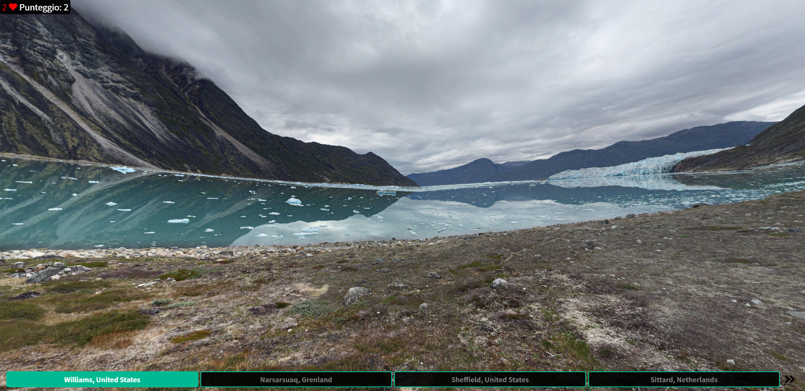
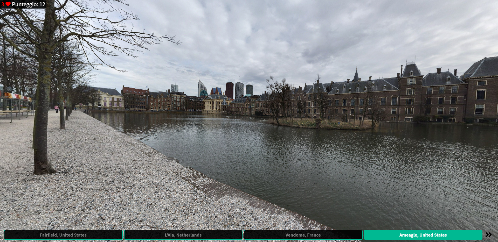
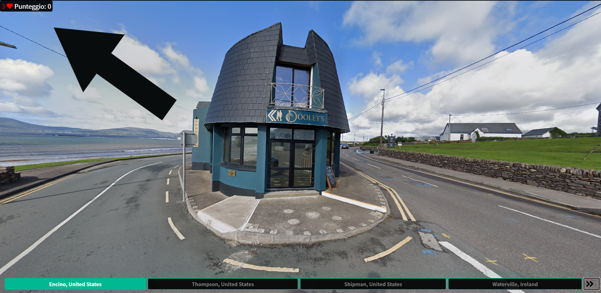
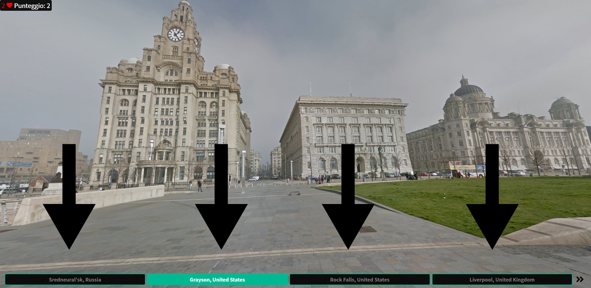
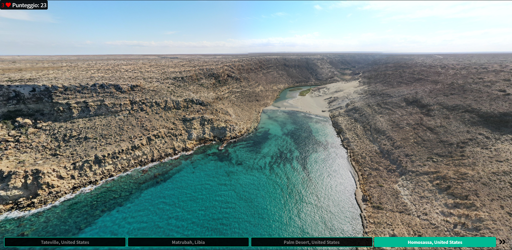

TUTORIAL 1
REGOLE GENERALI
Il gioco consiste nell'indovinare la posizione mostrata dall'immagine a 360°. Il giocatore, sfruttando le proprie conoscenze
geografiche e osservando in dettaglio la foto, dovrà compiere una decisione.


TUTORIAL 2
IMMAGINE MOSTRATE
Le immagini rappresentano luoghi famosi come i monumenti, le attrazioni e i musei ma anche location di rilievo e panorami.
Sono presenti oltre 100 foto da tutto il globo selezionate da Google Street View dal team di sviluppo.
TUTORIAL 3
VITE E PUNTEGGIO
Nella parte sinistra superiore dello schermo si può osservare il numero di vite rimanenti e il punteggio attuale della partita.
L'utente ha a disposizione 3 vite e fin quando non le esaurisce può continuare a giocare.


TUTORIAL 4
SCELTE DISPONIBILI
Nella parte inferiore dello schermo sono posizionati quattro bottoni per la scelta della risposta.
Soltanto una tra le quattro risposte è quella giusta. É possibile selezionare i bottoni anche attraverso
la tastiera premendo 1, 2, 3, 4 a seconda della risposta giusta ed inviare attraverso l'Enter.
TUTORIAL 5
PUNTEGGIO E RANKING
Se hai ottime skill da investigatore ed elevate conoscenze geografiche, riuscirai ad ottenere un punteggio notevole grazie
al quale avrai la possibilità di comparire nel ranking globale e competere per la prima posizione.
